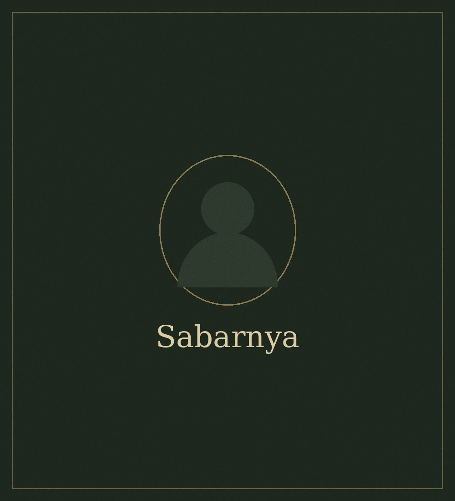

hello, I'm
I cook the way my grandmother did — slowly, generously, and almost always with the radio on. This site is a notebook of the recipes I keep going back to, along with the small reasons I love each one.
By day I write; by evening I'm usually elbow-deep in flour or trying to coax something tender out of a pot. Everything here has been tested in a small home kitchen with imperfect ovens, real budgets, and the occasional dinner guest who arrives an hour early.